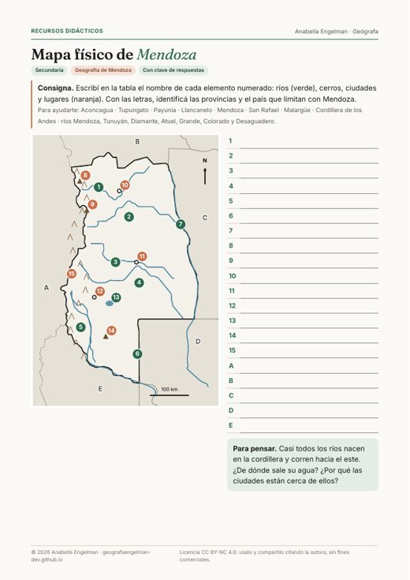
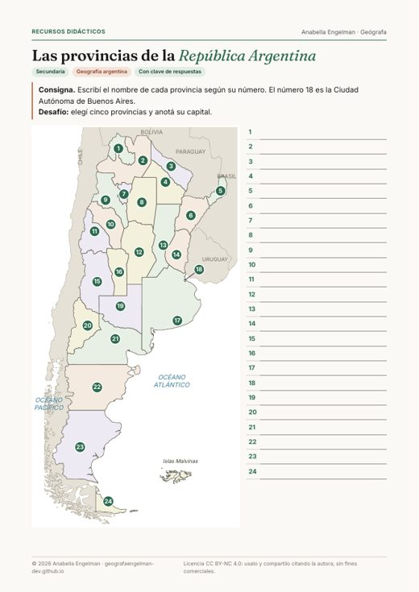
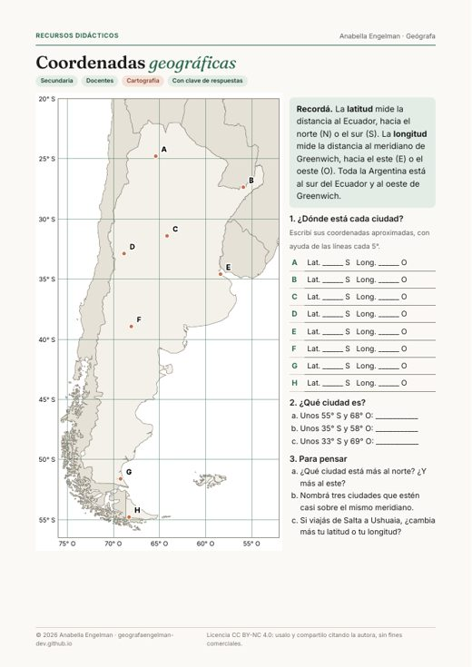
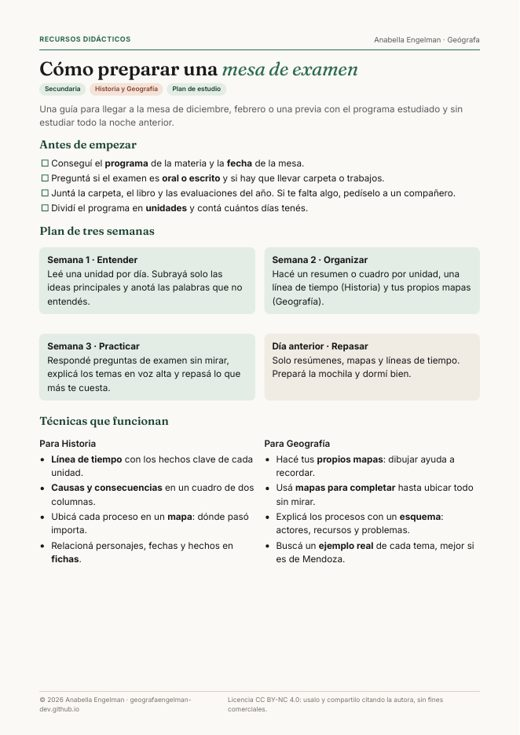
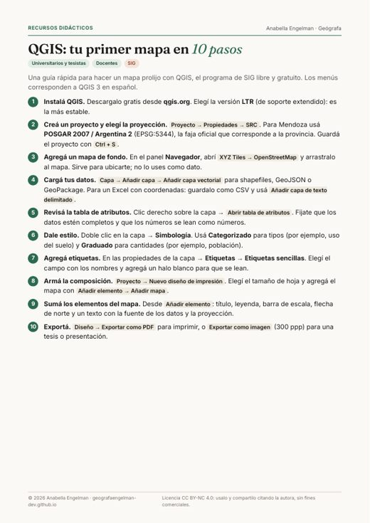
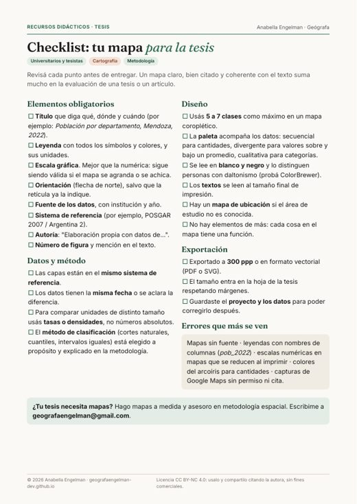

Mapa físico de Mendoza para completar
Ríos, cerros, ciudades y provincias limítrofes para ubicar, con una pregunta para pensar el agua y los oasis.
Mapas para completar, guías de estudio y fichas de cartografía que preparé para mis clases. Son gratuitos: descargalos, imprimilos y usalos en el aula.

Ríos, cerros, ciudades y provincias limítrofes para ubicar, con una pregunta para pensar el agua y los oasis.

Mapa numerado de las 23 provincias y la Ciudad Autónoma de Buenos Aires, con un desafío de capitales.

Actividad para leer latitud y longitud con ocho ciudades argentinas, de Salta a Ushuaia.

Plan de tres semanas, técnicas de estudio para Historia y Geografía y una autoevaluación para saber si estás listo.

De la instalación a la exportación, con atajos, fuentes de datos de Argentina y los errores más frecuentes.

Todo lo que tiene que tener un mapa antes de entregarlo: elementos, datos, diseño y exportación.
Los preparo y los comparto gratis. Si te resultaron útiles en el aula o para estudiar, podés invitarme un cafecito: me ayuda a seguir haciendo recursos nuevos.
Doy clases de apoyo en Historia y Geografía, asesoro tesis y dicto un curso de QGIS desde cero. También preparo materiales para escuelas e instituciones.